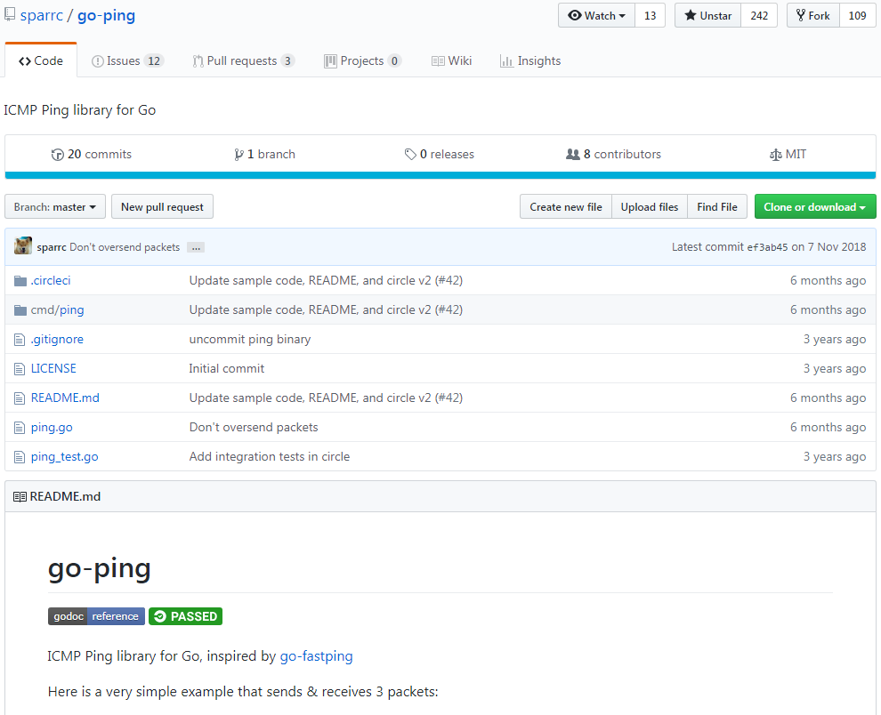
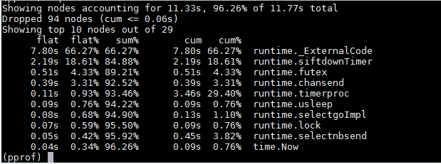
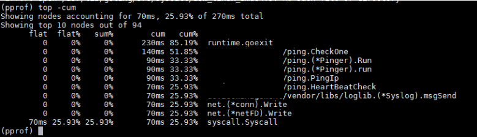

前言
前面我们研究了Ticker的实现原理，已经知道Ticker如果不主动停止会有资源泄露的问题。
本节介绍一个真实的案例，重点分析产生资源泄露的现象以及排查思路。
应用背景
曾经做过一个产品，不经意间出现了CPU使用率缓慢升高，最后CPU使用率竟然达到了100%，严重影响了业务。经过排查，问题出在Ticker的使用方式上，创建了Ticker，在使用结束后没有释放导致的。
该产品需要监控其他服务器的健康状态，其中很常见的一种做法是心跳检测。简单的说，周期性的ping这些服务器，能在指定时间内收到ack说明与该服务器之间的网络没问题。
当时使用了一个小众的开源组件tatsushid/go-fastping来做ping。
该组件介绍如下图所示：

问题现象
在做性能测试时，管理了1000台服务器，差不多4天后发现系统越来越慢，查看CPU使用情况，结果发现CPU使用率已经达到100%。
排查性能问题主要使用pprof，关于pprof的使用方法及原理介绍在请参照相关章节。
使用pprof查看CPU使用情况，主要是查看CPU都在忙什么：

从上图可以看出，CPU主要是被runtime包占用了，其中第二行runtime.siftdownTimer正是timerproc中的一个动作。
再使用pprof查看函数调用栈，主要看是哪些函数在使用CPU：

从上图可以看出，CPU主要是被ping模块占用，其中ping.(*Pinger).Run正是开源组件的一个接口。
经过pprof分析可以很清晰的指出问题出在go-fastping组件的Run()接口中，而且是与timer相关的。问题定位到这里，解决就很简单了。
此处，可以先总结一下Ticker资源泄露的现象：
- CPU使用率持续升高
- CPU使用率缓慢升高
源码分析
出问题的源码在ping.go的run()方法中。为叙述方便，对代码做了适当简化：
func (p *Pinger) run() {
timeout := time.NewTicker(p.Timeout) // 创建Ticker timeout
interval := time.NewTicker(p.Interval) // 创建Ticker
for {
select {
case <-p.done: // 正常退出，未关闭Ticker
wg.Wait()
return
case <-timeout.C: // 超时退出，未关闭Ticker
close(p.done)
wg.Wait()
return
case <-interval.C:
if p.Count > 0 && p.PacketsSent >= p.Count {
continue
}
err = p.sendICMP(conn)
if err != nil {
fmt.Println("FATAL: ", err.Error())
}
case r := <-recv:
err := p.processPacket(r)
if err != nil {
fmt.Println("FATAL: ", err.Error())
}
}
if p.Count > 0 && p.PacketsRecv >= p.Count { // 退出，未关闭Ticker
close(p.done)
wg.Wait()
return
}
}
}
该段代码可以看出，这个函数是有出口的，但在出口处没有关闭Ticker，导致资源泄露。
这个问题已经被修复了，可以看到修复后的局部代码如下：
timeout := time.NewTicker(p.Timeout)
defer timeout.Stop() // 使用defer保证Ticker最后被关闭
interval := time.NewTicker(p.Interval)
defer interval.Stop() // 使用defer保证Ticker最后被关闭
总结
有一种情况使用Ticker不主动关闭也不会造成资源泄露，比如，函数创建Ticker后就不会退出，直到进程结束。这种情况下不会持续的创建Ticker，也就不会造成资源泄露。
但是，不管哪种情况，创建一个Ticker后，紧跟着使用defer语句关闭Ticker总是好的习惯。因为，有可能别人无意间拷贝了你的部分代码，而忽略了关闭Ticker的动作。
赠人玫瑰手留余香，如果觉得不错请给个赞~
本篇文章已归档到GitHub项目，求星~ 点我即达